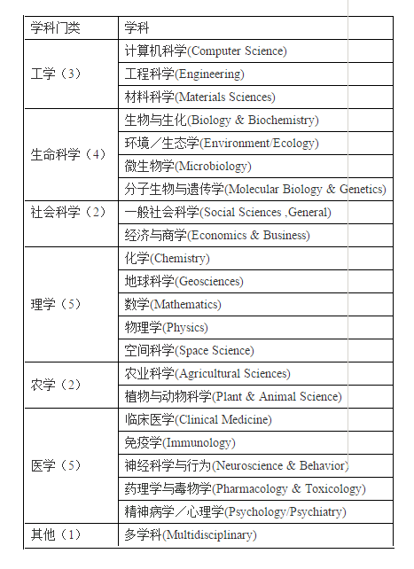

第 8 章 潜力学科
所谓潜力学科，就是机构各学科的被引量与各学科进入ESI的阈值进行比较，较接近的这个阈值的学科，就称为潜力学科。
8.1 ESI学科

图 8.1: ESI学科分类
8.2 潜力学科定义
学科潜力值 \(P\) 计算公式： \[\begin{align} P &= 1- \log\left( \frac{C_e}{PN \times C_{av} } \right) \\ &= 1- \log\left( \frac{C_e}{C_i} \right) \end{align}\] \(C_e\) 指当前进入该学科 ESI 引文排名的最低引文次数，\(C_i\) 指机构在该学科实际获得的引用次数，\(PN\) 指机构在该学科的发表的论文数， \(C_{av}\) 指机构在该学科发表论文的篇均被引频次。
学科潜力指数同时考虑了机构学科的总被引次数、论文数和 篇均被引频次，从总体衡量了机构在某个学科与 ESI 引文排名中引文指标的差距。\(P \in (0, 1)\) 值越大表明机构在 该学科与ESI引文排名差距越小，从而越接近ESI引文排名。 一般来说，如果学科的 \(P\) 值接近 1，则可以表 明机构在该学科有较好的发展前景，并有可能在未来进 入 ESI 引文排名，即可认为是机构的潜势学科。
8.3 各学科进入ESI的阈值
ThresholdESI <- read_rds("./data/dataset/ThresholdESI_set.rds")
ThresholdESI %>%
knitr::kable( booktabs = T,
caption = "各学科进入ESI的阈值(2017年8月数据)") %>%
kable_styling("striped")| Category_ESI_cn | Lowest_Cited_ESI |
|---|---|
| 农业科学 | 1692 |
| 生物学与生物化学 | 5079 |
| 化学 | 5981 |
| 临床医学 | 1855 |
| 计算机科学 | 2837 |
| 经济与商业 | 3549 |
| 工程学 | 1876 |
| 环境科学与生态学 | 3319 |
| 地球科学 | 4795 |
| 免疫学 | 3844 |
| 材料科学 | 3918 |
| 数学 | 3620 |
| 微生物学 | 4421 |
| 分子生物学与遗传学 | 10243 |
| 综合交叉学科 | 2087 |
| 神经系统学与行为学 | 4959 |
| 药理学和毒理学 | 2864 |
| 物理学 | 14029 |
| 植物学与动物学 | 2236 |
| 精神病学与心理学 | 3464 |
| 社会科学总论 | 1142 |
| 空间科学 | 27851 |
8.4 潜力学科统计
potent <- complete_set %>%
group_by(University_cn, Category_ESI_cn) %>%
summarise(sumcited = sum(TC), meancited = round(mean(TC),2)) %>%
filter( !is.na(Category_ESI_cn) ) %>%
left_join(ThresholdESI, by = "Category_ESI_cn") %>%
mutate( pd= round(sumcited/Lowest_Cited_ESI, 3) ) %>%
#filter( pd > 0.1 ) %>%
arrange(University_cn, pd) %>%
select(University_cn, Category_ESI_cn, pd) %>%
filter(University_cn %in% c("四川师范大学", "成都理工大学",
"西华师范大学","西华大学")
) %>%
ungroup() library(gridExtra)
library(grid)
library(ggpubr)
library(scales)
pplot <- function(df){
p<- df %>%
ggplot( aes(x = fct_reorder(Category_ESI_cn, pd), y = pd, fill = University_cn, width=0.75)) +
geom_bar(stat = "identity") +
scale_fill_discrete(drop=F)+
theme_bw()+
theme(legend.position="none")+
labs(y="potential index", x="", title=unique(df$University_cn))+
scale_y_continuous(expand = c(0,0),labels=percent) +
coord_flip()
}
glist <- potent %>%
mutate(University_cn = factor(University_cn)) %>%
split(.$University_cn) %>%
map(~pplot(.))
ggpubr::ggarrange(plotlist = glist, nrow = 2, ncol = 2) 
根据这个指标，我们计算四川省部分高校各学科的潜力指数，如图所示，化学学科是我校的潜力学科，并在学校规划中已被规划为ESI冲刺学科。但同时我们也发现，在四川省省属高校中，成都理工大学的化学学科是我校的潜在竞争对手。